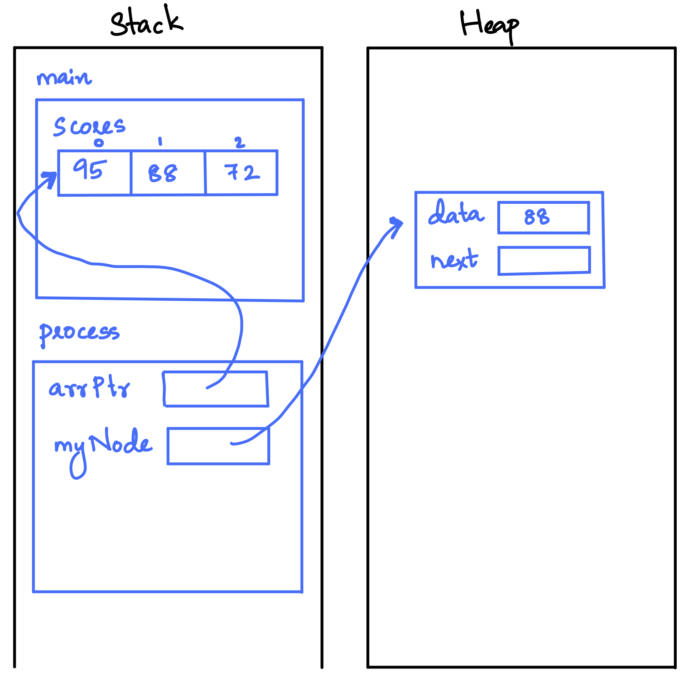
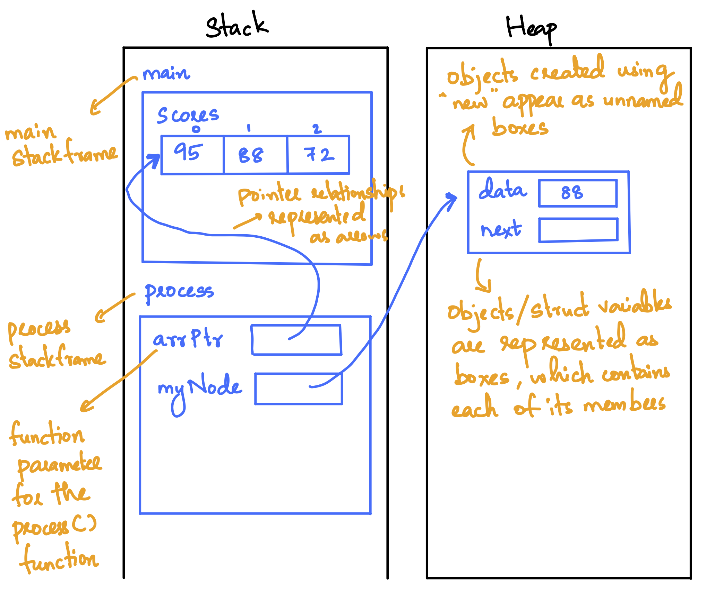

Guidelines
When drawing memory diagrams for code execution snapshots, follow these visual conventions:
- Stack Frames: Each active function call gets its own labeled stack frame box (e.g.,
mainstack frame,processstack frame). Function parameters (such asarrPtrforprocess()) are drawn inside the stack frame of the function they belong to. - Objects & Struct Variables: Objects and struct variables are represented as boxes containing each of their individual member variables inside (e.g.,
data,next). - Heap Allocations: Objects created dynamically using
newappear in the Heap as unnamed boxes (since dynamic heap allocations do not have variable names). - Pointers & Pointer Relationships: Pointer relationships are represented as arrows originating from inside the pointer's box and pointing directly to the target object, array, or element.
- Arrays: Arrays are drawn as contiguous boxes with their index numbers (
0,1,2) labeled above each element cell.
Example
Draw the memory diagram for the following program at the point marked SNAPSHOT HERE.
example.cpp
#include <iostream>
struct Node {
int data;
Node* next;
};
void process(int* arrPtr) {
Node* myNode = new Node;
myNode->data = arrPtr[1];
myNode->next = nullptr;
// --- SNAPSHOT HERE ---
}
int main() {
int scores[3] = { 95, 88, 72 };
process(scores);
return 0;
}Memory Diagram

Annotated Memory Diagram
